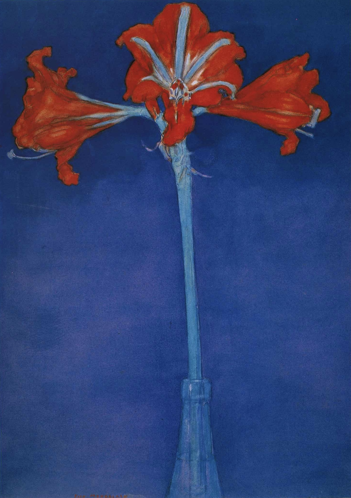

作品名 「アマリリス」
花言葉 「おしゃべり」「輝くほどの美しさ」「内気」「誇り」「虚栄心」「臆病な心」
アマリリス
「おしゃべり」
アマリリス Amaryllis は旧属名であり古代ギリシャやローマの詩に登場する羊飼いのアマリリスから取られています。花言葉の「おしゃべり」は、アマリリスの花が横向きにつき、となりの花とおしゃべりをしているように見えることに由来します。
アマリリス
ピエト・モンドリアン
ピエト・モンドリアンは、オランダの画家で、デ・ステイル芸術運動の主要メンバーであった。水平と垂直の直線のみによって分割された画面に、赤・青・黄の三原色のみを用いるというストイックな原則を貫いた一連の作品群がもっともよく知られる。陰影のほとんどない色面による抽象的な空間に中にあるアマリリスは、その特徴をよく現している。
| 作品名 | アマリリス |
| 作者 | ピエト・モンドリアン |
| 制作年 | 1907年 |
| 種類 | 水彩 |
| 寸法 | 46.5×33cm |
| 所蔵 | ニューヨーク近代美術館 |